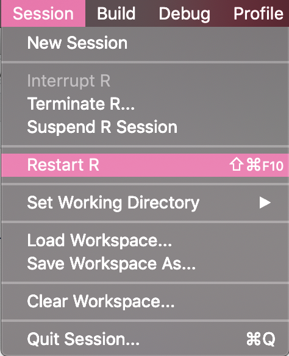
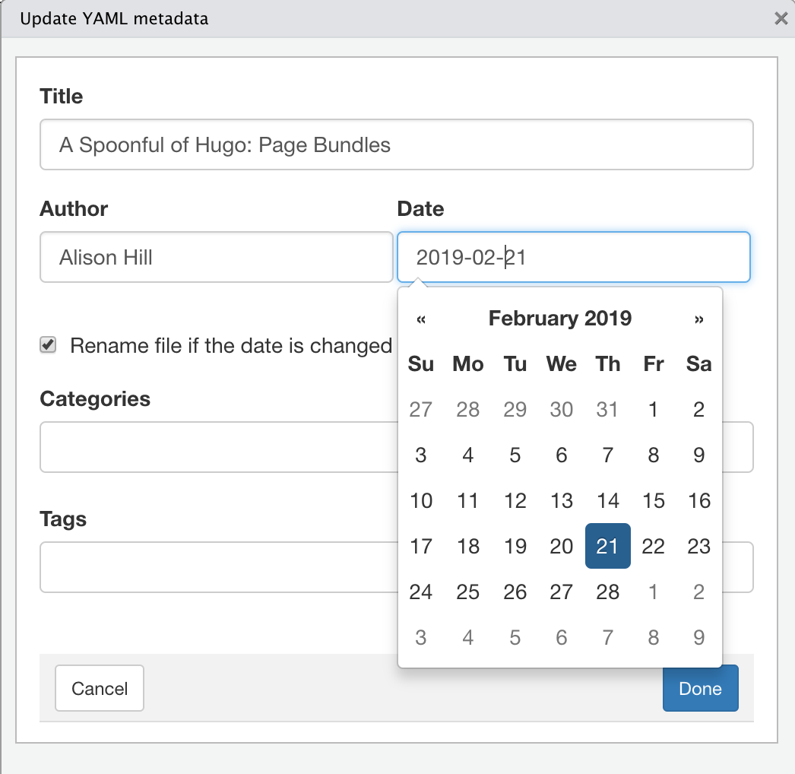
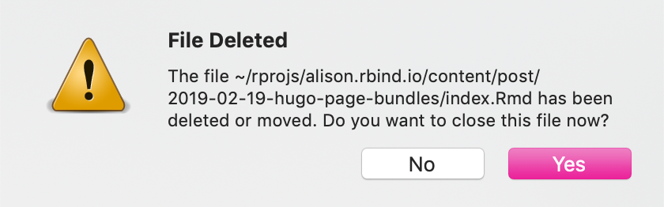

Hugo Page Bundles
By Alison Hill in Theme Features R
February 21, 2019
“Just a spoonful of Hugo helps the blog go down.”
- me, only somewhat kidding
In this series, I’m sharing small spoonfuls of Hugo that I have learned that hopefully can help you get your site UP (and even better- more efficient, more streamlined, more automated). You can read the previous posts about my “Spoonful of Hugo” series about Hugo archetypes and Hugo versions.
This is my third post in this series and it is breaking news.

Hugo Page Bundles
Well, not really breaking news, but you still may not know about it! Hugo v0.32
introduced a new feature called Page Bundles, as a way to organize the content files. Blogdown users rejoice that
Davis Vaughn posted an
issue on the rstudio/blogdown repo to enable this option, which Yihui added shortly before rstudio::conf 2019 🎉. Here is the snippet from the NEWS.md:
“One benefit of using a page bundle instead of a normal page is that you can put resource files associated with the post (such as images) under the same directory of the post itself. This means you no longer have to put them under the
static/directory, which has been quite confusing to Hugo beginners.”
What does a blogdown/Hugo site begin to look like without page bundles? I think here is a representative example from tidyverse.org (sorry tidyverse team- it’s not you, it’s the old Hugo).
For this team, they need an image for every post, which gets out of control pretty fast. Also, some ended up in
static/ too, organized by post (which I have done on my own blog, though not well or consistently).
What would it look like to use page bundles?
content/
├── about
│ ├── index.md
├── posts
│ ├── 2015-07-23-hi-world
│ │ ├── bakers.csv
│ │ ├── image1.jpg
│ │ ├── image2.png
│ │ └── index.Rmd
│ └── 2015-07-24-bye-world
│ └── index.Rmd
One could call this bundled file structure “tidier” 🍱.
In the above, after serving site, index.html files also get added to the bundle. In Hugo’s terms, these are
leaf bundles. The resource files allowed in a bundle include page and non-page items like images, pdf, .csv files, etc.
This is instead of:
content/
├── about
│ ├── index.md
├── posts
│ ├── 2015-07-23-hi-world.Rmd
│ ├── bakers.csv
│ ├── image1.jpg
│ ├── image2.png
│ └── 2015-07-24-bye-world.Rmd
When you create a new bundled post, the actual content of the post goes in the index file of a page bundle. So:
# not bundled post
post/2015-07-23-hi-world.Rmd
# bundled post
post/2015-07-24-bye-world/index.Rmd
Bundle Me, blogdown!
First, read the previous post on setting up a netlify.toml file. Since using Hugo page bundles depends on Hugo v0.32 or higher, you should go ahead and update hugo then update your netlify.toml with your updated version:
blogdown::update_hugo()
blogdown::hugo_version()
Now, let’s use the usethis package.
Project-specific .Rprofile
First, I’m going to demo here how to create a project-specific .Rprofile file- but know that you can do a user-level .Rprofile file too.
# install.packages("usethis") # uncomment this to install
usethis::edit_r_profile(scope = "project")
These helpful messages should print to your console: please note the “restart” reminder…
> usethis::edit_r_profile(scope = "project")
● Restart R for changes to take effect
✔ Setting active project to '/Users/alison/rprojs/alison.rbind.io'
● Modify '.Rprofile'
Now you could add this to your file:
# in .Rprofile of the website project
if (file.exists("~/.Rprofile")) {
base::sys.source("~/.Rprofile", envir = environment())
}
options(blogdown.new_bundle = TRUE)
The first code chunk above is from the blogdown book, where we describe a workaround for loading both user and project .Rprofile files (since R technically only reads one startup profile file).
If you don’t want this, you could add the blogdown options to your user .Rprofile instead using:
usethis::edit_r_profile(scope = "user")
Heck, while you are at it, you could set a bunch of options to make your blogdown life easier:
# in .Rprofile of the website project
if (file.exists("~/.Rprofile")) {
base::sys.source("~/.Rprofile", envir = environment())
}
options(
blogdown.author = "Alison Hill",
blogdown.ext = ".Rmd",
blogdown.subdir = "post",
blogdown.yaml.empty = TRUE,
blogdown.new_bundle = TRUE,
blogdown.title_case = TRUE
)
For the blogdown-specific options, any of these prepopulate content in your “New Post” Addin (I told you to use this here). There is a handy table from the blogdown book, summarized here:
blogdown.author= author of new postsblogdown.ext= default extension of new posts (can also be “.md” or “.Rmarkdown”)blogdown.subdir= theme-specific, you need to know your theme and content folder hereblogdown.yaml.empty= I told you to do that hereblogdown.new_bundle= what this whole post is about!blogdown.title_case= “nEed More coFFee” –> “Need More Coffee” (it tidies all your post titles to title case)
The Newline Thing
Here is a massive .Rprofile gotcha: this file must end with a blank line. So make sure you add an empty line at the end of the file, then save it, and restart your R session.

Want to make your general R life easier in the future? Follow Yihui’s advice and do this in RStudio to ensure that all source files end with a newline:

Use Bundles
After restarting R, try using the “New Post” Addin, this time with feeling. There is still one more gotcha though. Use the Addin to create your new bundled post. The only catch is that once you are looking at your exciting new post, you should delete the slug in the YAML (I posted an issue about this here).
The reason is that you want the link to your post to be:
http://alison.rbind.io/post/2019-02-21-hugo-page-bundles/
If you include the slug, the link to your post will be:
http://alison.rbind.io/post/2019-02-21-hugo-page-bundles/hugo-page-bundles
Another option is to update your config.toml file with permalinks like
Yihui suggests (but beware: this will change all your past links as well, requiring some
Netlify redirects):
[permalinks]
post = "/:year/:month/:day/:slug/"
The default here from Hugo was /post/:year-:month-:day-:slug/:slug/.
A small note: if you want to add relative links from a blog post to another post in your same blog. So [this](/post/2019-02-19-hugo-archetypes/) becomes
this.
Now, add images and data files to your ❤️’s content! But you may want to do one more thing…
Update Metadata
If you are anything like me, you may draft a blog post then come back to it later. For example, I started this post 2 days ago, but want to publish it today, 2021-05-24. The cool thing that was already built-in to blogdown is the “Update Metadata” Addin. With your blog post open (it should be called index.Rmd)^[If no post is open, you will get an error: Warning message: The current document does not seem to contain YAML metadata], click on Addins and select “Update Metadata”. You should see a window like this:

Check the box to rename the file if the date has changed. RStudio will tell you your file has been deleted- which is technically true since the folder was renamed, but don’t panic!

Click YES. The index.Rmd file that is now open should have an updated date field in the YAML. In your RStudio file viewer, you may want to click on “content” at this point then navigate back to view your post- then you will then see that the folder name now has an updated date too.